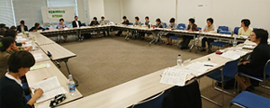

6月16日（土）10時30分より、浦和コミュニティセンター第14集会室にて、第54回埼玉県消費者大会第3回実行委員会が開催され、14団体22人と事務局3人が出席しました。

【議題】
- 1. 実行委員長・事務局長から
- 2. 第2回実行委員会報告
- 3. 基調報告の確認
- 4. 「埼玉県への要望」について意見交換
- 5. 大会当日の内容について
- オープニングは、昨年に引き続き、実行委員会団体紹介スライド上映とします。
- 分科会のテーマは、①食に関する課題、②消費者に関する課題、③社会保障に関する課題、④環境・エネルギーに関する課題の4つのテーマとします。
- 各団体の活動を広く知っていただく大切な機会として、ロビーでのパネルによる活動紹介を今大会でもおこないます。
- 全体会会場の座席については、前方からの着座を促すために、実行委員会団体は前方に座席を指定します。
- マスコミ各社へのPRとして、9月実行委員会後にグループにわかれて、各報道機関の支社を訪問します。
6. 分科会にわかれて意見交換
4つの分科会テーマにわかれ、問題意識を出し合いました。欠席団体へは、次回に向けた事前集約で希望を確認します。
7. 実行委員会団体へのお知らせ
第1回県内消費者団体全体研修会などをご案内しました。
□次回日程
7月13日（金）14時30分～
浦和コミュニティセンター第15集会室
|